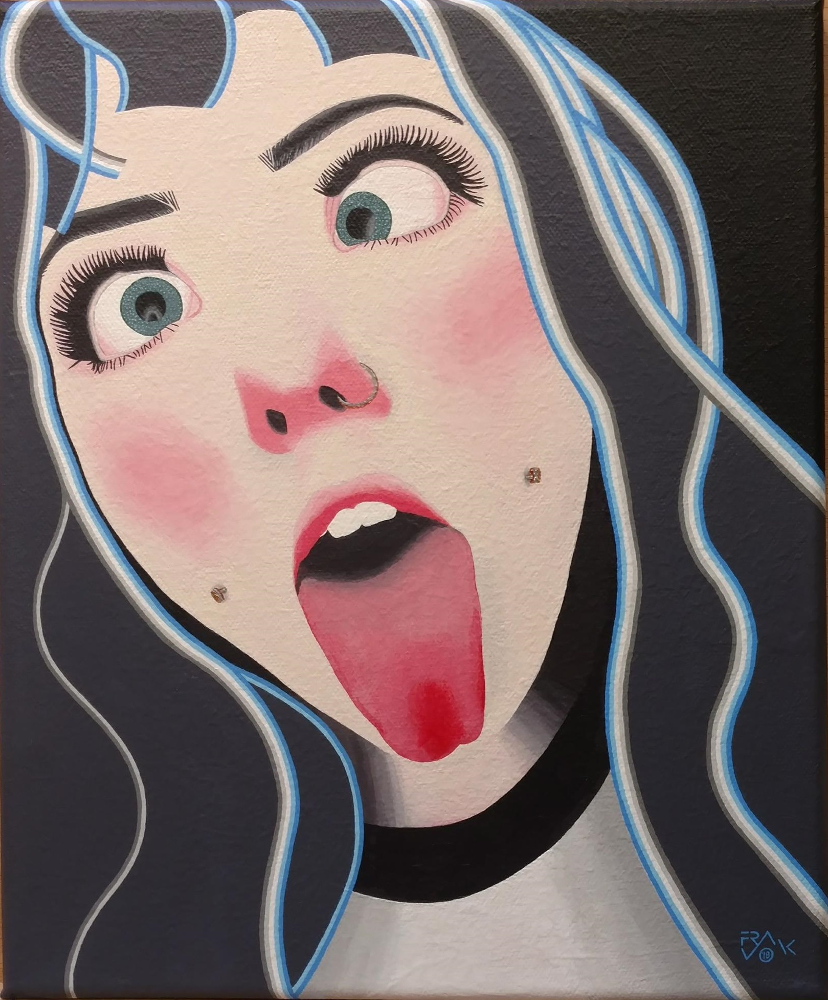

"Sierra" September 2018
Personal Portrait in Acrylics.
I stumbled upon this photo on a "Pastel Goth" site
I just could'nt stop myself from grabbing my paints together, and go for it...
2 weeks later, this is what ended up on the spare canvas that i had lying around.

Painted version, Acrylics on Cotton

Reference Photo
I am happy she liked it, and even shared it on her Instagram account.
"Wet Dreams with Cowboy Henk" September 2018
The last painting (picture 8), is not finnished yet. As i currently spend a lot of time on my studies,
it might take a while before i have time to get to work on it.
So I could'nt stop myself from sharing it with you in advance.


It is painted in acrylic paint on cotton, 60x45 cm.
And as you can see the canvas is not stretched yet.
"Boerentoren" September, 2018
While i was watching the show "white Collar", I saw a painting passing by that really intrigued me.
It was an Art Deco painting of the Chrystler building.
After some research, I found 2 paintings that i wanted to use as an inspirational assist for my own painting.
The tower i'm painting, is the iconic "Boerentoren", in my hometown of Antwerp.
It is also known as the "KBC Tower", as that's the name of the bank that's currently housed in it.
Making it 75 x 100 cm in Acrylics, it is quite a lengthy job. Combining it with my dayjob and other works of art, we're 3 years in the making...
Here are the two examples:

This painting is from the series
This is another one in the same style
And here's my version so far:

I can't wait to see where it goes. I have changed the sun several times, from red flames on it with Egyptian Hieroglyphs, to one that shoots solar flares. In the end, i believe that less is more. Therefore i changed it back by overpainting it with cadmiumyellow.
Welcome to my site. It is not just still "under construction", it is more like a primordial soup at the moment. Sorry for your inconvenience. Please try again later.